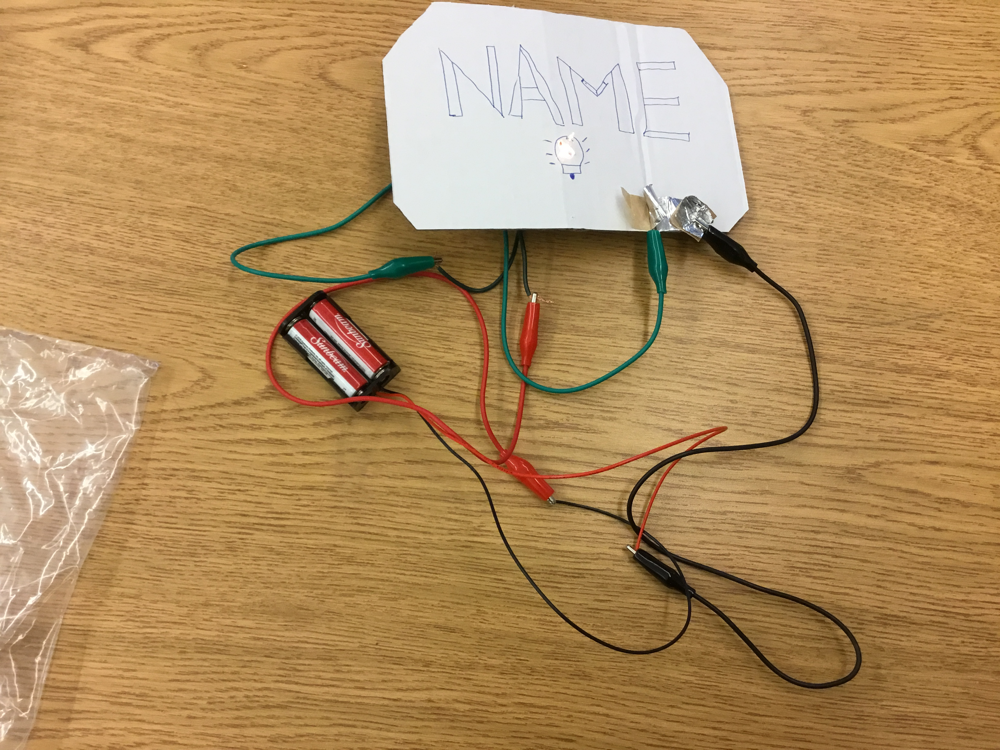

My name is Nebyu Desalegne I like to play soccer. When I was little I saw alot of people playing and I used to watch soccer on tv and I started to like soccer and start to play when I was 6. I started to play by my own no one teached me and I still like it it is my favorite sport and it is a famous sport in the whole world.
Sometimes I like to study about IT and when I grow up I want to became Software Engineer,or Soccer Player.
This is my project that I worked in EveryThing IT.
This project is vampire teeth.
This project is the kids when they sing Baby shark wide open their mouth.

This project has diffrerent pictures to create the pumpkin's eye and mouth for hallowen.
I create the switch when you work in a big company and you work their you have to say your name when you get in the building, when the machine recognized your voice and it will light up and let you in.
This is my plan before I did the switch.
.JPG)
.JPG)
When you connect the metal to the other one it will light up.
When you let it go the metal the light will turn out.
.JPG)
This final project is that I put New York photo on the letter.